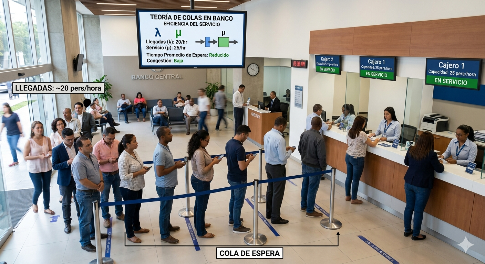
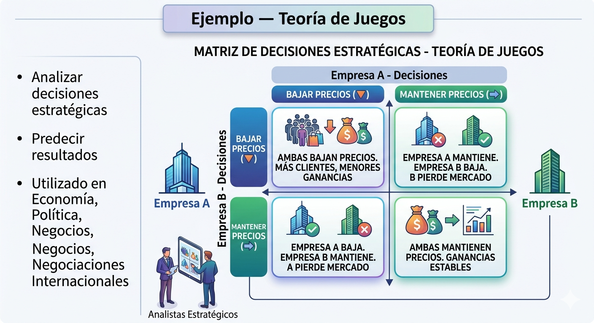

Teoría General de Sistemas — Fundamentos y aplicaciones prácticas
La teoría de colas y la teoría de juegos son ramas fundamentales dentro de la Teoría General de Sistemas. Ambas permiten analizar situaciones reales relacionadas con la toma de decisiones, administración de recursos, tiempos de espera y comportamiento estratégico entre individuos o empresas.
La teoría de colas estudia los sistemas donde las personas, vehículos o procesos deben esperar para recibir un servicio. Ejemplos comunes son bancos, hospitales, supermercados, plataformas digitales y sistemas de atención telefónica.
Un sistema de colas funciona cuando los usuarios llegan a un sistema, esperan si no hay capacidad disponible y son atendidos según una regla establecida. El objetivo es analizar cómo se comporta el sistema bajo diferentes niveles de demanda.
Por otro lado, la teoría de juegos analiza cómo las decisiones tomadas por una persona o grupo afectan a los demás participantes. Se utiliza en economía, política, negocios, deportes y tecnología.
La teoría de juegos estudia cómo las decisiones de un individuo dependen de las decisiones de otros. Cada participante busca obtener el mejor resultado posible según lo que espera que hagan los demás.
Es una disciplina matemática que estudia el comportamiento de las líneas de espera. Busca optimizar tiempos y recursos para mejorar la eficiencia de los sistemas.
Rama matemática que estudia la toma de decisiones estratégicas entre diferentes participantes llamados jugadores.

En un banco llegan aproximadamente 20 personas por hora y el cajero puede atender hasta 25 personas en ese mismo tiempo. Gracias a la teoría de colas es posible analizar el tiempo promedio de espera de los clientes, identificar momentos de congestión y determinar si es necesario abrir más cajas de atención. Este tipo de análisis ayuda a mejorar la eficiencia del servicio, reducir filas y aumentar la satisfacción de los usuarios. La teoría de colas también es utilizada en hospitales, supermercados, restaurantes y plataformas digitales de atención al cliente.

Dos empresas competidoras deben decidir entre bajar o mantener los precios de sus productos. Si ambas bajan los precios, pueden atraer más clientes, pero también disminuir sus ganancias. Si ambas mantienen los precios, las ganancias pueden ser más estables. La teoría de juegos permite analizar las posibles decisiones estratégicas de cada empresa y predecir cuál opción resulta más conveniente dependiendo de las acciones del otro participante. Esta teoría es utilizada en economía, política, negocios y negociaciones internacionales.
Un supermercado atiende 30 clientes por hora y llegan 25 clientes. ¿Crees que habrá largas filas?
Dos jugadores participan en un juego donde pueden cooperar o competir. Analiza cuál opción genera mayor beneficio colectivo.
¿Qué teoría estudia los tiempos de espera en sistemas de servicio?
Si dos empresas cooperan, ambas ganan más. ¿Qué teoría explica este comportamiento?
¿Es verdad que la teoría de juegos solo se utiliza en videojuegos?
1. ¿Qué estudia la teoría de colas?
2. ¿Qué analiza la teoría de juegos?